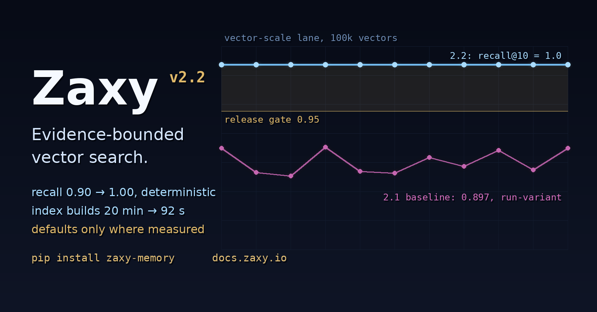

X Article Draft: Zaxy 2.2.0

Zaxy 2.2.0 is out: evidence-bounded vector search.
The short version: in 2.1, our own benchmark caught our ANN path being worse than brute force — slower, less accurate, with 20-minute index builds — so we shipped it disabled. In 2.2 we fixed it, and the defaults moved exactly as far as the evidence extends and not one dimension further.
That ordering matters. The standard failure mode for approximate nearest-neighbor search is shipping it because it is supposed to be fast, then discovering in production that recall quietly cratered or the index takes the better part of an hour to build. Zaxy's release rule is the opposite: a default changes only when an evaluation lane that ships in the repo proves the change at the scale it claims.
What the lane said at the 2.1 baseline, at 100k vectors:
| Metric | ANN (HNSW) | Exact |
|---|---|---|
| Recall@10 | 0.8969, varying per rebuild | 1.000 |
| Query p50 | 37.9 ms | 17.0 ms |
| Full index build | ~20 minutes | seconds |
What it says after 2.2, same scale, double-pass plus a confirmatory run:
| Metric | ANN (HNSW) | Exact |
|---|---|---|
| Recall@10 | 1.000, identical across rebuilds | 1.000 |
| Query p50 | parity to better, in-run | — |
| Full index build | 92 seconds (12.9x) | seconds |
What ships:
- an exact float64 rerank over approximate candidates, which both fixed recall and made it deterministic across HNSW's nondeterministic builds;
- bulk index builds through a COPY-based generation swap instead of row inserts — 1,180 seconds down to 92 at 100k;
- unfiltered direct-table queries via per-session shadow generations (the real overhead was a 16 ms per-query filter scan, not what we suspected);
- engagement defaults bounded to the measured envelope: ANN turns on at 100k+ vectors up to 64 dimensions. Above that, exact search remains the recommendation — measured, not assumed;
- a research paper with the full evidence chain, cited theory, explicit math, and the negative results in the same tables as the wins.
The plot twist is the part worth reading the paper for.
At high dimension, recall looked catastrophic — 0.52 — and stayed broken through every fix. The diagnosis: it was the benchmark, not the index. Our synthetic test corpus at 1536 dimensions produces a median of 210 vectors exactly tied with the true top-10. When hundreds of candidates are equally correct, recall@10 against one arbitrary tie-break ordering is not a measurement; it is a coin flip the index cannot win. Even exact float32 search scores 0.53 against it.
So we fixed the metric in the open: tie-aware recall (standard ann-benchmarks practice) is now reported alongside the strict number — never instead of it — and a realistic-distribution control corpus confirmed the index is healthy at production dimensions. The same correction resurrected int8 quantization's high-dim score from 0.61 to 1.0. Benchmarks need the same skepticism as the systems they judge.
Along the way we hit three undocumented crash-or-corrupt defects in our embedded graph engine — whose upstream is frozen, final release, archived repo — and designed around all three. They are documented in the paper with reproductions. That is what depending on frozen infrastructure honestly looks like.
The claim boundary, because it always matters: every number above is from internal lanes on synthetic corpora, labeled as such, with raw artifacts versioned in the repo. Nothing here is an external benchmark claim.
Paper: https://docs.zaxy.io/docs/research/ann-engineering-2026-06.html Release: https://github.com/syndicalt/zaxy/releases/tag/v2.2.0 Install: pip install zaxy-memory
Zaxy is event-sourced memory for agent work: a hash-chained append-only log as the source of truth, cited Memory Checkout as the trust contract, and defaults that move on lane evidence. https://docs.zaxy.io